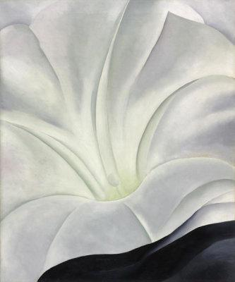
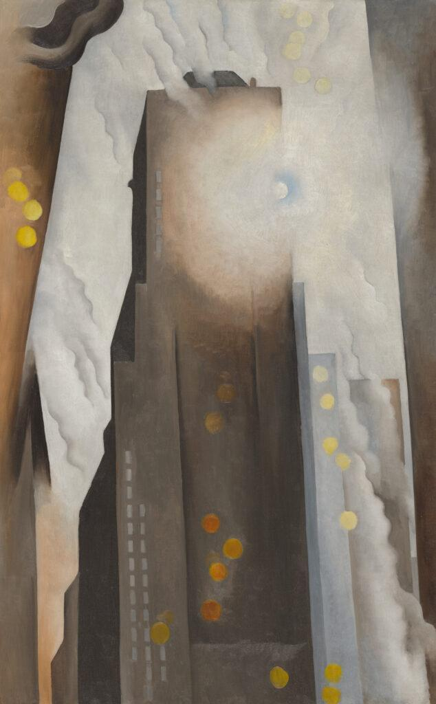

Georgia O’Keeffe: Beauty and Symbolism of the Interwar Period
Oxford Advanced Learner’s Dictionary defines beauty as “the quality of giving pleasure to the senses or to the mind” (Oxford University Press, n.d.). I interpret the true nature of beauty as something that lives beyond a literal definition. Beauty flows throughout the universe; it is a powerful force that can make life worth living and influence passion and joy. It can be easily overlooked, but it endures the test of time. However, beauty does not exist on its own. It emerges as an underlying and often unspoken consciousness of one’s surroundings. The more you look for it, the more you find it. My subjective experiences have shaped my appreciation for Georgia O’Keeffe’s works and the way they embody themes of beauty during the interwar period.
O’Keeffe is best known for her renderings of flowers, a subject long associated with beauty and emotion. Flower painting itself was often dismissed as “petty, painstaking, pretty,” a characterization tied to the gender of the artist and to the historical devaluation of subjects associated with women (Jasper, 2003, p. 6). Flowers also carry emotional meaning beyond the canvas through their roles in funerals, weddings, and other rituals. O’Keeffe’s magnified floral compositions became some of the most recognizable works of her career, even as critics frequently interpreted them through the lens of femininity and sexuality (Cleveland Museum of Art, n.d.; Hughes, 1986).

Many critics have noted similarities between O’Keeffe’s flower paintings and female sexual anatomy, an interpretation O’Keeffe repeatedly rejected. During the 1920s and 1930s, when her flower paintings were attracting increasing attention, the representation of female sexuality in art remained controversial, which further shaped how critics framed her work (Jasper, 2003, p. 2). The persistence of that interpretation is important because it reveals as much about the gendered expectations surrounding O’Keeffe as it does about the paintings themselves.
O’Keeffe was born in 1887 and grew up on a dairy farm near Sun Prairie, Wisconsin. By the time she graduated from high school in 1905, she had decided to pursue art. She later studied at the Art Institute of Chicago and the Art Students League in New York (The Georgia O’Keeffe Museum, n.d.). O’Keeffe later minimized the importance of biography for understanding her work, emphasizing instead what she had done with the places and experiences that shaped her artistic practice (O’Keeffe, 1976).
In 1916, a friend brought a group of O’Keeffe’s drawings to Alfred Stieglitz, the influential photographer and gallery owner who became one of the most important figures in her early career. Stieglitz exhibited and promoted her work, and the two later became romantically involved and married in 1924. His reaction to her drawings—“At last, a woman on paper!”—also helped establish the gendered framework through which O’Keeffe’s work would often be discussed (Hughes, 1986, para. 12). Stieglitz’s photographs of O’Keeffe and his promotion of her art contributed to her public image, but their relationship was also complicated. O’Keeffe later wrote that she found him more remarkable in his work than in his character, suggesting the tension between their artistic partnership and personal relationship (Malcolm, 1979).
O’Keeffe’s flower paintings were among the works most strongly shaped by this public framing. Morning Glory with Black (1926) offers a clear example of her close-up floral compositions. The painting depicts a morning glory whose pale petals expand toward the edges of the canvas, while a bold area of black at the lower right—part of a black petunia—creates a dramatic contrast with the flower’s soft white, blue, and muted yellow tones (Cleveland Museum of Art, n.d.). The creases and shadows of the petals remain subtle, and the smooth transitions in color create a sense of tranquility. Although these calm flower paintings are what O’Keeffe is most widely recognized for, in my opinion, she has arguably more technically and compositionally interesting works that better depict her life as an artist during the interwar period.
In 1925, one year after their marriage, O’Keeffe and Stieglitz began living seasonally in the recently completed Shelton Hotel in New York City. The height and geometry of Manhattan gave O’Keeffe a new visual language, and she eventually created approximately twenty images of the city’s skyscrapers (Art Institute of Chicago, n.d.-b; Gentry, 2016). O’Keeffe later recalled her excitement at living so high above the city and beginning to imagine how she might paint New York (Gentry, 2016, p. 20).

The Shelton with Sunspots, N.Y. (1926), now in the collection of the Art Institute of Chicago, depicts the building that had become O’Keeffe’s New York home. She rendered the Shelton from a low viewpoint, transforming its towering structure into a series of abstract rectangular forms. The hard geometry of the building is softened by circular sunspots and flowing smoke or steam, allowing the organic and industrial elements of the city to coexist within the same composition (Art Institute of Chicago, n.d.-b). For me, the work captures the wonder of the 1920s city: new steel construction, vertical expansion, and the optimism surrounding technological progress after World War I. Rather than repeating the building’s scale through description alone, O’Keeffe lets the low viewpoint, glowing light, and abstracted architecture create the feeling of human insignificance beneath the new skyscraper.
In 1929, O’Keeffe traveled to New Mexico, a landscape that became increasingly central to both her art and her sense of independence. She continued spending part of each year there and became a permanent New Mexico resident in 1949 (The Georgia O’Keeffe Museum, n.d.). The landscape gave her distance from New York and from the artistic environment that had developed around Stieglitz, while offering new subjects through which she could explore space, color, and abstraction.
One of my personal favorites is Sky above Clouds IV (1965), a monumental eight-by-twenty-four-foot canvas created when O’Keeffe was 77. The work culminated a series inspired by her experiences looking down at clouds from airplanes during the 1950s (Art Institute of Chicago, n.d.-a). O’Keeffe simplifies the clouds into horizontally repeated white ovals that recede toward the horizon over a deep blue field. Above them, the color shifts into softer bands of blue, green, orange, and muted red. The repetition creates a landscape that is recognizable yet highly abstract.
For me, Sky above Clouds IV gives the viewer a sense of serenity and calm. Its enormous scale makes the repeated cloud forms feel almost endless, while the simplified shapes prevent the eye from becoming trapped in small details. The painting reflects one of O’Keeffe’s greatest strengths: her ability to reduce a landscape to selected forms and colors while still preserving the emotional experience of seeing it.
New Mexico inspired some of O’Keeffe’s most influential later work, highlighting the natural beauty of the world through her distinct visual language. Her selective representation directs viewers toward the landscape as a whole rather than toward every individual detail. At the same time, O’Keeffe’s career unfolded within an art world that routinely minimized the historical importance of women artists. Parker and Pollock (1981) argued that modern art history constructed a narrative in which women were not only absent but were treated as “artists of lesser talent and no historical significance” (p. 45). O’Keeffe resisted that framework throughout her career. She famously insisted, “I am not a woman painter,” rejecting the idea that her work should be evaluated primarily through her gender (Hughes, 1986, para. 11).
That resistance is important to the way I understand O’Keeffe’s work. She wanted the paintings themselves to be taken seriously, rather than treated as secondary products of her gender, her marriage, or the mythology surrounding her life. Her work reiterates my own idea of beauty and its ability to flow throughout the world. Whether she was painting flowers, skyscrapers, desert landscapes, or clouds, O’Keeffe emphasized selected forms and colors in ways that encouraged viewers to look again at subjects they might otherwise overlook. Her paintings demonstrate that beauty can emerge not only from what is represented, but from the act of paying attention.
References
- Art Institute of Chicago. (n.d.-a). Sky above Clouds IV. https://www.artic.edu/artworks/100858/sky-above-clouds-iv
- Art Institute of Chicago. (n.d.-b). The Shelton with Sunspots, N.Y. https://www.artic.edu/artworks/104031/the-shelton-with-sunspots-n-y
- Cleveland Museum of Art. (n.d.). Morning Glory with Black. https://www.clevelandart.org/art/1958.42
- Gentry, K. A. (2016). Symbols of independence, love, and sorrow: Georgia O’Keeffe’s skyscraper series [Master’s thesis, University of Alabama at Birmingham]. UAB Digital Commons. https://digitalcommons.library.uab.edu/etd-collection/1727/
- Hughes, R. (1986, March 17). Art: A vision of steely finesse: Georgia O’Keeffe, 1887–1986. Time. https://time.com/archive/6705730/art-a-vision-of-steely-finesse-georgia-okeeffe-1887-198/
- Jasper, L. A. (2003). Gender, sexuality and the significance of the flower in twentieth century art [Master’s thesis, Texas Woman’s University].
- Malcolm, J. (1979, March 5). Artists and lovers. The New Yorker. https://www.newyorker.com/magazine/1979/03/12/1979-03-12-118-tny-cards-000115093
- O’Keeffe, G. (1976). Georgia O’Keeffe. Viking Press.
- Oxford University Press. (n.d.). Beauty. In Oxford Advanced Learner’s Dictionary. https://www.oxfordlearnersdictionaries.com/us/definition/english/beauty
- Parker, R., & Pollock, G. (1981). Old mistresses: Women, art, and ideology. Routledge & Kegan Paul.
- The Georgia O’Keeffe Museum. (n.d.). About Georgia O’Keeffe. https://www.okeeffemuseum.org/about-georgia-okeeffe/